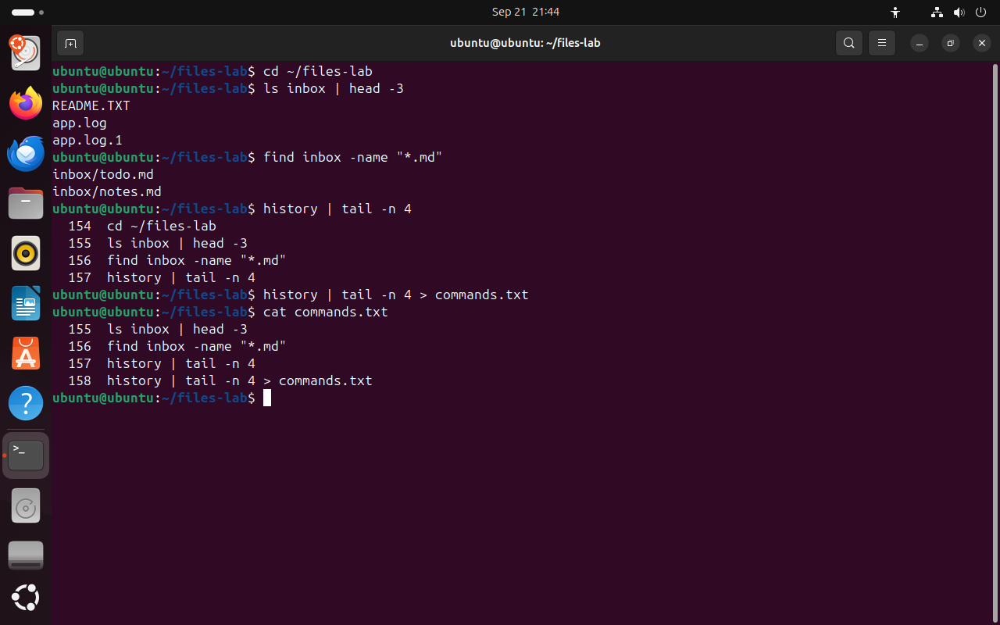
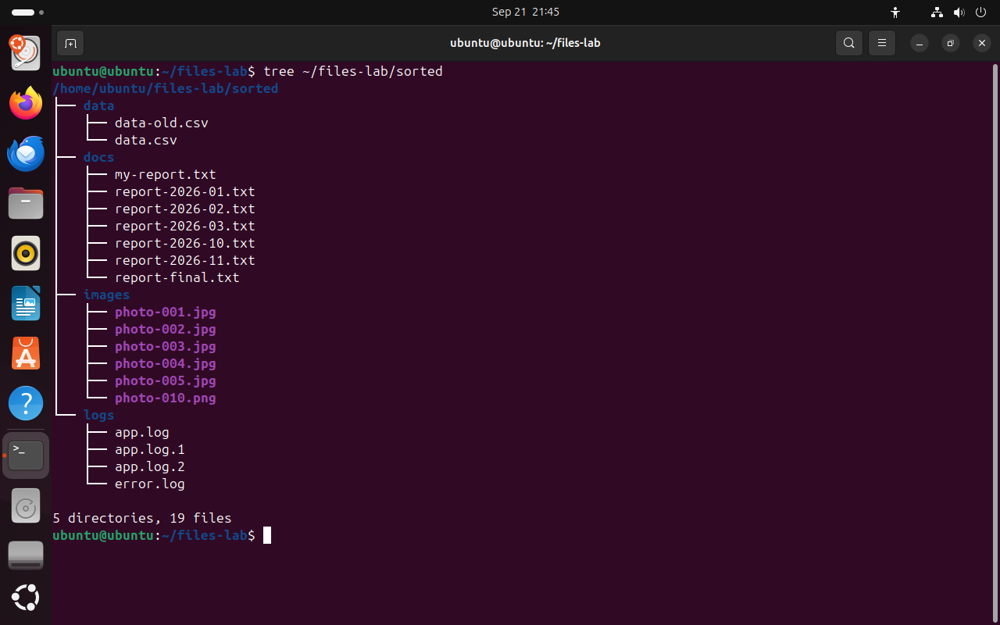
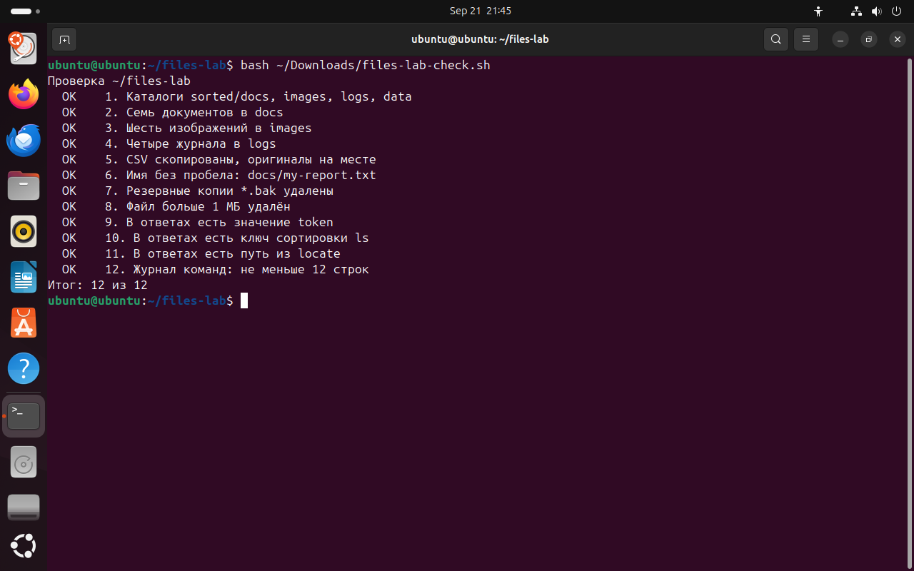

Часть 7 из 7
Практическая работа № 3 · Разбор каталога inbox
В этой части выполним квест по разбору каталога inbox, будем вести журнал команд и проверим результат скриптом.
7.1 Журнал команд
Результат практической работы — не только разобранный каталог, но и журнал: список выполненных команд с объяснением каждой. По журналу преподаватель видит ход решения, а вы сможете повторить работу на другом компьютере.
Оболочка bash сохраняет введённые команды в историю. Команда history выводит её с номерами, а вместе с tail -n 4 — только последние четыре строки. Вывод истории можно записать в файл знаком > и затем перенести нужные строки в журнал. Клавиша ↑ листает историю назад, сочетание Ctrl+R ищет в ней команду по фрагменту.
Журнал ведётся в файле ~/files-lab/journal.md по шаблону из материалов. В каждой строке таблицы — команда, что она сделала, и безопасный вариант: команда, которая сначала показывает результат и ничего не меняет, или вариант с ключом -i. После занятия этот файл становится вашей шпаргалкой команд.
cd ~/files-labчто делает
Что делает команда. Переходит в каталог занятия files-lab из любого места.
По частям:
cd- сменить текущий каталог
~/files-lab- куда перейти (путь от домашнего каталога)
ls inbox | head -3что делает
Что делает команда. Выводит первые три имени из каталога inbox.
По частям:
ls- вывести содержимое каталога
inbox- что показать
|- передать вывод левой команды на вход следующей
head- оставить только первые строки
-3- сколько первых строк оставить: 3
find inbox -name "*.md"что делает
Что делает команда. Ищет в inbox файлы с окончанием .md.
По частям:
find- найти файлы и каталоги в дереве
inbox- где начать поиск
-name "*.md"- имя совпадает с образцом "*.md"; в образце можно использовать маску, регистр учитывается
history | tail -n 4# последние четыре командычто делает
Что делает команда. Выводит последние четыре команды из истории оболочки с номерами.
По частям:
history- встроенная команда оболочки: вывести историю команд
|- передать вывод левой команды на вход следующей
tail- оставить только последние строки
-n 4- сколько последних строк оставить: 4
history | tail -n 4 > commands.txt# записать их в файлчто делает
Что делает команда. Записывает последние четыре команды истории в файл commands.txt.
По частям:
history- встроенная команда оболочки: вывести историю команд
|- передать вывод левой команды на вход следующей
tail- оставить только последние строки
-n 4- сколько последних строк оставить: 4
>- записать вывод в файл; если файл есть, он будет перезаписан
commands.txt- файл, в который записывается вывод
cat commands.txtчто делает
Что делает команда. Выводит содержимое файла commands.txt.
По частям:
cat- вывести содержимое файла
commands.txt- какой файл вывести (путь относительно текущего каталога)
- 1номер команды в истории
- 2текст команды
- 3вывод history записан в файл commands.txt
- 4строки истории можно перенести в журнал
{kind=link}

Весь снимок ↗История команд с номерами и её запись в файл.
Что показывает снимок. history вывел последние команды с номерами, а перенаправление записало тот же список в файл commands.txt.
Где это пригодится. История помогает восстановить, какие команды были выполнены, — для журнала работы, отчёта или разбора ошибки.
7.2 Задания квеста
Все задания выполняются в каталоге ~/files-lab. Каждое следующее задание опирается на результат предыдущего, поэтому порядок менять не нужно. Последняя графа таблицы — номер пункта, по которому результат проверяет скрипт files-lab-check.sh.
- 1Проверьте содержимое каталога
~/files-lab/sorted, оставшегося от части 2, и удалите его:rm -r ~/files-lab/sorted. - 2Верните набор в исходное состояние:
bash ~/Downloads/files-lab-setup.sh. - 3Скопируйте шаблон журнала:
cp ~/Downloads/journal-template.md ~/files-lab/journal.md. - 4Перейдите в каталог набора:
cd ~/files-lab/inbox.
| № | Задание | Подсказка | Пункт проверки |
|---|---|---|---|
| 1 | Создайте каталог ~/files-lab/sorted с подкаталогами docs, images, logs и data одной командой. | mkdir -p и фигурные скобки | 1 |
| 2 | Переименуйте my report.txt в my-report.txt. | кавычки | 6 |
| 3 | Перенесите все отчёты report-*.txt и my-report.txt в sorted/docs одной командой. | сначала ls с теми же масками | 2 |
| 4 | Перенесите изображения обоих форматов в sorted/images. | *.{jpg,png} | 3 |
| 5 | Перенесите журналы app.log, app.log.1, app.log.2 и error.log в sorted/logs. | две маски в одной команде | 4 |
| 6 | Скопируйте таблицы .csv из inbox в sorted/data. Оригиналы остаются в inbox. | cp | 5 |
| 7 | Удалите резервные копии *.bak, проверив маску. | ls, затем rm | 7 |
| 8 | Найдите в ~/files-lab файл больше 1 МБ, узнайте его размер и удалите его. | find -size, ls -lh | 8 |
| 9 | Найдите файлы inbox, изменённые больше 30 суток назад, и запишите список в ~/files-lab/answers.txt. | find … > answers.txt | проверяет преподаватель |
| 10 | Найдите скрытый файл в inbox и допишите его содержимое в answers.txt. | ls -A, cat … >> | 9 |
| 11 | Найдите в man ls ключ сортировки по размеру. Допишите в answers.txt команду, которая выводит sorted/images по размеру. | / внутри справки | 10 |
| 12 | Найдите командой locate путь к файлу os-release и допишите первый путь в answers.txt. | locate, head -1 | 11 |
Параллельно заполняйте журнал: не меньше двенадцати строк, по строке на каждую команду, которая изменила файлы или дала ответ. Журнал проверяет пункт 12 скрипта.
7.3 Проверка результата
Скрипт files-lab-check.sh ничего не изменяет: он только читает каталог ~/files-lab и по каждому пункту выводит OK или НЕТ. Запускать его можно сколько угодно раз — после каждого задания или в конце работы. Если пункт не выполнен, вернитесь к заданию с этим номером проверки.
tree ~/files-lab/sorted# итоговая структурачто делает
Что делает команда. Рисует дерево каталога sorted с подкаталогами и файлами.
По частям:
tree- нарисовать дерево каталогов
~/files-lab/sorted- какой каталог (путь от домашнего каталога)
bash ~/Downloads/files-lab-check.sh# проверка по 12 пунктамчто делает
Что делает команда. Запускает скрипт проверки: он читает ~/files-lab и выводит OK или НЕТ по каждому пункту.
По частям:
bash- запустить оболочку bash и выполнить команды из файла
~/Downloads/files-lab-check.sh- файл скрипта (путь от домашнего каталога)
{kind=link}

Весь снимок ↗Каталог sorted после выполнения заданий 1–6.
Что показывает снимок. В каталоге sorted четыре подкаталога: 2 таблицы, 7 документов, 6 изображений и 4 журнала — всего 19 файлов.
Где это пригодится. Сравните дерево своего каталога с эталоном: число файлов в каждом подкаталоге должно совпасть.
{kind=link}

Весь снимок ↗Результат проверки эталонного решения.
Что показывает снимок. Скрипт проверил каталог по 12 пунктам и вывел Итог: 12 из 12.
Где это пригодится. Проверка скриптом показывает результат сразу. Если какой-то пункт выводит НЕТ, вернитесь к заданию с этим номером проверки.
Итоги части 7
historyвыводит историю команд,>записывает вывод в файл.- Журнал содержит команду, результат и безопасный вариант каждой команды.
- Скрипт проверки только читает каталог и показывает, какие пункты выполнены.
В отчётСнимок tree ~/files-lab/sorted, снимок вывода files-lab-check.sh, файлы answers.txt и journal.md.
Что сдать
Отчёт README.md с десятью снимками экрана, файлы journal.md и answers.txt из каталога ~/files-lab. Снимки делаются в вашей системе; имя пользователя и даты на них будут отличаться от снимков урока.
| Снимок | Тема | Что написать под снимком |
|---|---|---|
01-site-tree.png | Каталог site | Почему mkdir без -p сообщил об ошибке. |
02-inbox.png | Учебный набор | Какой файл виден только с ключом -A и почему. |
03-cp-i.png | Копирование с вопросом | Что сделает cp без -i, если файл уже есть. |
04-rmdir.png | Удаление каталога | Чем rmdir отличается от rm -r. |
05-masks.png | Маски | Кто раскрывает маску и что получает команда, если совпадений нет. |
06-find.png | Поиск find | Почему -size -1M не нашёл ни одного файла. |
07-locate.png | Поиск locate | Почему locate выводит путь удалённого файла. |
08-man.png | Справка | Какой ключ сортирует по размеру и как вы его нашли. |
09-sorted.png | Результат квеста | Сколько файлов в каждом подкаталоге. |
10-check.png | Проверка | Итог проверки; какие пункты потребовали исправления. |
Критерии оценки · 10 баллов
- 2создание, копирование и перенос файлов — задания 1–6
- 2безопасное удаление с проверкой маски и пути — задания 7–8
- 2поиск find и locate — задания 9 и 12
- 2справка и скрытый файл — задания 10–11
- 2журнал команд: команда, результат и безопасный вариант
По каждому пункту: 2 балла — результат получен и объяснён, 1 — результат без объяснения, 0 — результата нет или объяснение неверное.
Перед сдачей
Отмечено 0 из 5
Домашнее задание · занятие 4
Максим Николаевич не хочет задавать домашнее задание. Но очень хочет

Шпаргалка команд
Превратите журнал практической работы в шпаргалку cheatsheet.md: таблицу из 15 команд занятия. Для каждой команды заполните четыре графы.
| Команда | Назначение | Безопасный пример | Опасный вариант и чем он опасен |
|---|---|---|---|
rm | удаляет файлы без корзины | ls *.bak, затем rm -v *.bak | rm * .bak — лишний пробел, удаляются все файлы каталога |
| … | … | … | … |
В шпаргалку обязательно входят cp, mv, rm, find с -delete, locate, man -k и одна маска со скобками [ ]. Каждый безопасный пример выполните в своём каталоге ~/files-lab: в шпаргалке только проверенные команды.
Порядок сдачи
- Файлы
labs/lab03-files/в репозиторииos-linux-course:README.mdсо снимками,journal.md,answers.txt,cheatsheet.md. - Ветка и PRветка
lab03-files, Pull Request вmainс названием «Практическая работа № 3». - Срокдо начала следующего занятия.
- Критериипрактическая работа — 10 баллов по критериям выше; шпаргалка принимается, если в ней 15 команд и все четыре графы заполнены.
- ИИнейросеть можно попросить причесать формулировки и оформить таблицу в
.md— я сам так делаю всегда, поэтому и вам запрещать не буду. Команды и результаты — только из вашего терминала.